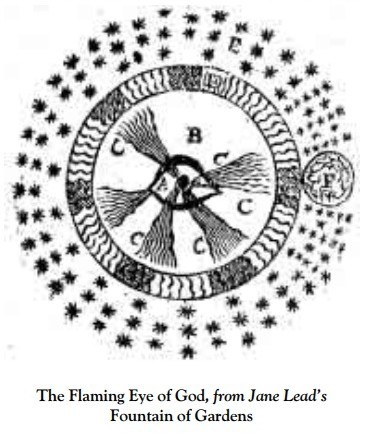
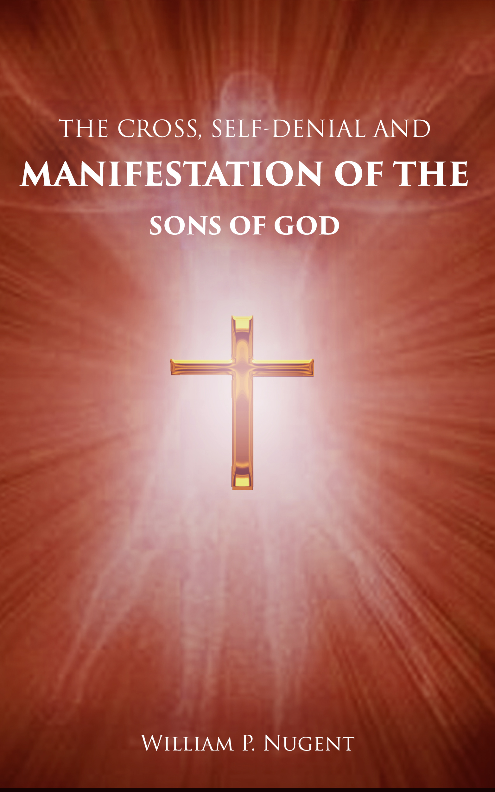
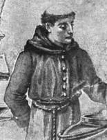

A Wealth of Web Resources
The Writings of Jane Lead
Jane Lead of Norfolk, England was a 17th century Christian mystic whose writings were deeply inspired, and have much Truth to share with us on our Sonship journey. Of special interest is her 60 Propositions - a powerful prophecy of the Sons of God to come. Many of her writings will speak differently to each of us, and all Sonship seekers are encouraged to at least explore her offerings. There is much of great mysteries and great substance here to teach and inspire. Sample and see what speaks to you!

The great Jane Lead was perhaps a woman of God before her time and was rather an outcast in the eyes of the organized Church of her day. She wrote of course in the old English dialect of the time - and Diane Guerrero has developed here an amazing website dedicated to making Ms. Lead's writings accessible to today's reader. She has painstakingly constructed the Spirit's Day Version (SDV) of all (or almost all) of Jane's wonderful works of spiritual seeing, reporting, teaching and prophecy. Many of the writings may still seem unfathomable to some, but they are nevertheless well worth tasting in the Spirit. Highly recommended.Word For The Bride
Seeing a need for additional Kingdom/Sonship resources, including the sharing of their own creative gifts, Word For The Bride has been a love-offering from Charles and Sarah Faupel since around 2011. They've used it to publish many inspired written articles, music and poetry - and a number of relevant audio and video messages - reaching many non-traditional inquirers ever since. Well worth exploring!
Don't miss the Books/Articles Section where a good number of these important Kingdom/Sonship articles are presented, plus several lesser-known book recommendations. Charles has also helped to keep the works of the great J. Preston Eby alive and well by Narrating much of the late teacher's Kingdom manuscripts into a large collection of free Mp3 audio files. Thank you Charles!
A Wilderness Voice In Search of a City
George Davis and Michael Clark share what they've been hearing from the Lord, publishing articles that speak to you who are seeking Him with all your hearts. This site is dedicated to the dear saints who are pressing into God's kingdom and allowing Him to change them day by day into the image of Christ.
"...the voice of one crying in the wilderness, Make straight the way of the Lord." (John 1:23) "For he looked for a city which has foundations, whose builder and maker is God." (Hebrews 11:10)
The Teaching Ministry of Bill Nugent

Bill has known the Lord for over 40 years, having come to know Him at the age of 20 while in college. The Lord has anointed him as a teacher and he’s taught the scriptures both in writing and orally. He’s served as deacon, elder and co-pastor in churches in Florida and New York and has taught in both the classroom setting and from the pulpit. Bill also has a strong burden for personal evangelism and evangelism over the Internet.Epistles of the Kingdom Unto Royal
The complete title of this free PDF is "Epistles of the Kingdom Unto Royal By The Holy Spirit" and it was given to Prophet and Evangelist Royal D. Cronquist to take down in dictation from the Lord over many years (along with his own comments), and eventually publish. This is a very anointed, very challenging message given for those who might attain the ultimate goal of full-blown Sonship while still alive in the body.
Our sense is that the individual seeker should be very "ready" before tackling and digesting this one. For its demands are rather severe, and the way is narrow, for those who would successfully pass through it. But such are the requirements of real death on the Cross, of death to self and the soulish life - in trade perhaps for the glorious freedom and world-changing Holy Spirit power of the full Life of Christ Jesus within us.
In Spirit and Truth
This is the website of Jackie Caporaso, styled as a kind of "restaurant" serving a variety of meals to the spiritually hungry. Feel free to download and print, or read online, any items of interest. "Living Letters" are current Letters written by Jackie as the Spirit inspires. "Dreams" are keys to open doors of understanding. Or one can explore the "Buffet" section filled with words of other inspired voices from various streams that flow into Jackie's restaurant.
Voice Of One Crying
This is the website of Ken Brown who met the Lord long ago in his freshman year in college. Quickly thereafter, Ken was immersed in a religion that systematically robbed him of any subsequent reality in God. He was mired in that system for the next 35 years, often frustrated by it, but more often blindly subservient to its demands. Unfortunately, it took him that long to figure out God was waiting for him to walk away from religion - and cry out to Him, so He could reveal Himself to him and fulfill the desire of Ken's heart. He began to know the Lord in a freedom and reality that religion could never give him. It is to that freedom and reality this website is dedicated.
Tentmaker
Tentmaker was founded in the late 1990s by Gary and Michelle Amirault. Through this ministry, they touched the lives — directly and indirectly — of perhaps millions of people around the world. Across every continent, countless individuals came to know our Father-God, the Creator of the universe, in a deeper and more transformative love than they could have ever imagined.
A ministry of grace — exploring the victorious, restorative gospel of Jesus Christ for over three decades.
Kingdom Promise 1335
This is the website of Julie Hogan containing a selection of writings by J. Preston Eby, E.E. Brooks and George Hawtin as well as other faithful Kingdom writers. Additionally are a number of compelling pieces written by Julie herself - sure to both challenge and encourage those of us walking the path of faith, "outside the box" of traditional Christianity. Also featured is the music of Sons Of Korah. Enjoy!
The Finished Work Of Christ
(PLEASE NOTE: This site uses AI in the generation of content.) This is the website of Carl Timothy Wray. He is a prophetic writer and revelatory teacher of The Finished Work of Christ and the Full Counsel of God. Through Zion University and over one hundred Kingdom books, he unveils the revelation of Jesus Christ within the spirit and soul of man — awakening the sons of God to immortality, identity, and dominion in the earth.
Carl's extensive work here presents the broadest (and perhaps most complete) overview of God's Biblical plan for mankind we've ever seen... a good roadmap for, and concise definitions of, various important steps in the life of believers, and for all of the ages yet to come!
The Autobiography of Madame Guyon
And speaking of mortification of the flesh, if you've never read it we offer you here the free PDF of Madame Guyon's own story where she seemed to spare herself absolutely no room for the gratification of her flesh in an attempt to please God and attain union with the Almighty - adhering to what she perceived as His strictest demands of self-denial. It is a remarkable and harrowing story - one which few of us could likely endure for the rest of our "natural" lives. And of course there were many Saints of old who lived similar lives of severe self-denial (like St. John of the Cross, St. Teresa of Avila and countless others). But for some, maybe this is/was what is needed in the end.
The Practice of the Presence of God

This free PDF is a short practical volume by Brother Lawrence that may assist some in gaining altitude on their own flight-path to Sonship victory. Brother Lawrence was born Nicholas Herman around 1610 in France. His birth records were destroyed in a fire at his parish church during the Thirty Years War in which he fought as a young soldier. In this war he also sustained a near fatal injury to his sciatic nerve, which left him quite crippled and in chronic pain for the rest of his life. Worth a read!Signs of the Times
Aware that every generation for the past 2,000 years has believed they were living in the End Times, we are still hard-pressed NOT to notice the signs of the times roiling up all around us today. Have the times ever seemed so ripe for judgment and harvest? Maybe. But have we ever seen such swift change in land and sea and society during what could be called relative "peacetime" - yet is anything but peaceful?
And those who felt destined, maybe even prepared, to bear a move of God so Huge the world has never seen it nor believed in it - maybe these few have known it as infinitely more than possible and therefore only better ready by the watching and waiting for it.
Some were scattered, or hidden away, active in ministry or not - outside, or still inside the "camp" of mainstream Christianity - true followers of Our Lord Jesus wherever hidden or found. It doesn't matter. Still the fierce blast of the Refiner's Fire searched them out, and through and through, and carefully executed Its deadly work - an uncomfortable qualification for true Sonship: Crucified! on the cross with Christ Jesus. Yet through this great burning Love they and their day (His day) approaches, refined as Gold for this very hour!
The whirlwind of change in the world is a resounding call to many... and to the few, with hearts tuned to the Lord's increasing signs, it should register the loudest... knowing where we are in History. Did we not come here for this, beloved? Can we not feel the birth-pangs? Can we not hear the Almighty calling us to attention?